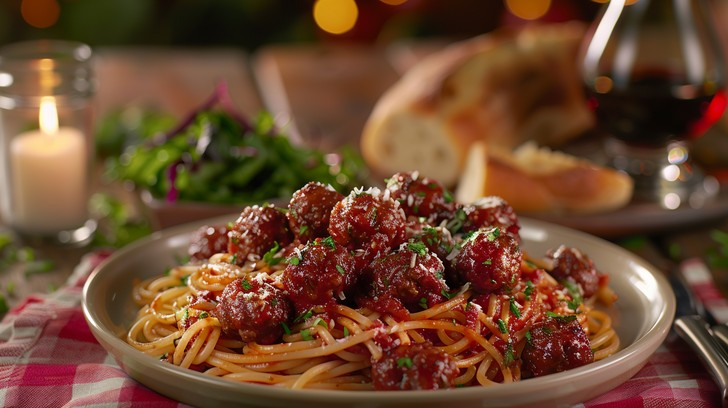

Italian Meatballs
Home

The most Italian meatballs you have ever had!
Mamma Mia! Let's make some of the most delicious Italian meatballs you've ever tasted.
Follow this easy recipe and step-by-step guide, and bring out the little Italian in you!
Ingredients
- 1/3 cup plain bread crumbs
- 1/2 cup milk or beef broth
- 2 tablespoons olive oil
- 1 onion, diced
- 1 pound ground beef
- 1 pound ground pork
- 2 large eggs
- 2 tablespoons grated Parmesan cheese
- 1/4 bunch fresh parsley, chopped
- 3 cloves garlic, crushed
- 2 teaspoons salt
- 1 teaspoon ground black pepper
- 1 teaspoon dried Italian herb seasoning
- 1/2 teaspoon red pepper flakes
Steps
- Gather all ingredients.
- Cover a baking sheet with foil and spray lightly with cooking spray. Soak bread crumbs in milk in a
small bowl for 20 minutes.
- Meanwhile, heat olive oil in a skillet over medium heat. Add onion; cook and stir until onion has
softened and turned translucent, about 5 minutes. Reduce heat to low and continue cooking and
stirring until onion is very tender, about 15 minutes more.
- Gently stir beef and pork together in a large bowl. Add onions, bread crumb mixture, eggs,
Parmesan cheese, parsley, garlic, salt, black pepper, Italian herb seasoning, and red pepper
flakes; mix together using a rubber spatula until combined. Cover and refrigerate for about
one hour.
- Preheat the oven to 425 degrees F (220 degrees C).
- Form mixture into balls about 1 ½ inches in diameter; arrange in a single layer on the prepared
baking sheet.
- Bake in the preheated oven until browned and cooked through, 15 to 20 minutes.
- Serve with your favorite tomato sauce and spaghetti. Enjoy!